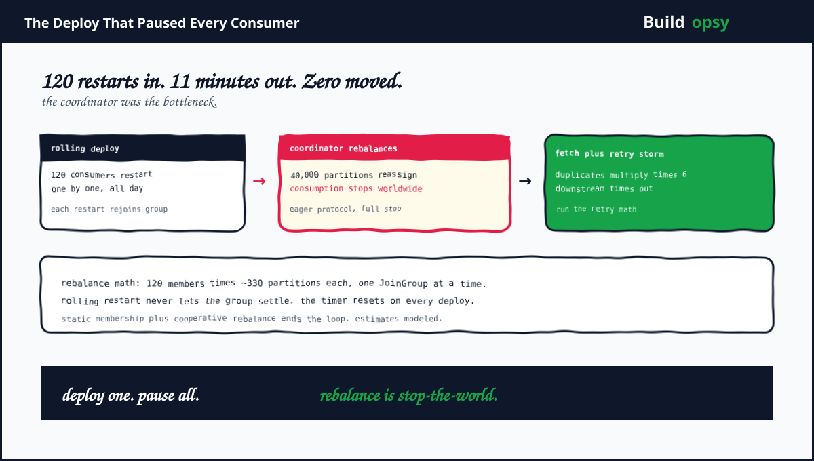

1. The Deploy That Moved Every Partition
The setup is ordinary enough to be yours. One consumer group with 120 members shares roughly 40,000 partitions, about 330 each. Traffic is steady at a modeled 60,000 events per second. Tuesday brings a routine config change, rolled out the safe way: restart consumers one at a time, never more than one down. The deploy starts at 10:00. By 10:02 consumption has flatlined everywhere, including on the 119 consumers nobody touched.
The mechanism is the consumer group protocol doing exactly what it promises. Every member restart sends a JoinGroup request. Every JoinGroup triggers a rebalance. Under the classic eager protocol, rebalance means every member first revokes all partitions, waits for the new assignment, then resumes. Consumption stops group-wide during the window. One restart costs one stop-the-world pause. A rolling restart of 120 members costs 120 pauses back to back, and because each new JoinGroup can arrive before the previous rebalance completes, the group never reaches a stable generation. The deploy that was supposed to touch one consumer at a time paused all of them, continuously, for a modeled 11 minutes.
2. Why Rebalances Cascade Instead of Completing
Rebalance math punishes scale twice. First, assignment cost grows with members times partitions. The group leader must compute ownership for 40,000 partitions across 120 members on every rebalance, then every member must revoke, re-fetch positions, plus resume. At small scale this completes in seconds and nobody notices. At 40,000 partitions the stop-the-world window stretches into minutes, which guarantees the next rolling restart lands mid-rebalance. The timer resets. The group restarts its homework. This is the cascade: each rebalance takes long enough to overlap the next trigger, so completion keeps receding.
Second, the defaults conspire. A consumer that spends too long rebalancing without polling hits the modeled 5-minute max poll interval and gets fenced out, which triggers yet another rebalance. Slow consumers look dead to the coordinator, and the coordinator responds by rebalancing harder. Session timeouts near 45 seconds were tuned for crash detection, not for 40,000-partition assignment storms, so the failure detector fires during the very event it should ride out. Every safety mechanism measures the incident and concludes there is more incident.
Then comes the fetch storm. When the group finally settles, 120 consumers resume simultaneously from their last committed offsets and re-request everything they missed. Brokers that idled during the pause now face 11 minutes of backlog plus 120 concurrent fetch storms. Fetch latency spikes, some consumers fall behind again, poll intervals breach again, and the coordinator schedules an encore. Recovery carries its own trigger. The bill is hiding in the boundary between the deploy pipeline and the group protocol.
3. The Retry Amplifier: 11 Minutes Becomes 6x Load
Upstream never waits politely. Eleven minutes of unconsumed events means producers keep producing, buffers fill, plus downstream services start timing out on data that has not arrived. Timeouts fire retries. Retries re-enter the same topics the consumers are already struggling to drain. Modeled math: 60,000 events per second times 660 seconds of pause builds roughly 39.6 million events of backlog. If each stalled downstream call retries an average of 2 extra times with no backoff, the recovery load lands near 6x normal before a single new event arrives. The pause ended at 10:11. The overload ran past noon.
This is the same amplifier priced in the retry-storm calculator: tasks times wasted retries times cost per attempt. Plug in the modeled shape, say 39.6 million delayed deliveries with 2 wasted retries each at a fraction of a cent of compute per attempt, and the storm's share of the day's budget stops looking like a rounding error. Retries without jitter plus backoff are not resilience. They are a self-inflicted DDoS with a deploy as the trigger and a dashboard that claims the brokers are fine. The brokers were fine. That is precisely the trap.
4. What Went Wrong in the Design
Eager rebalancing stayed the default at 40,000 partitions. Stop-the-world assignment is acceptable for small groups and catastrophic for large ones. The protocol choice was never revisited as partitions grew 10x around it. Protocol defaults are load-bearing architecture. They deserve review on the same schedule as capacity.
Deploys and consumer groups were strangers. The rollout pipeline restarted members with no awareness of group generation, rebalance state, or assignment cost. Two control planes acted on the same 120 processes with no shared lock. Uncoordinated automation is just synchronized failure with better logging.
Nothing measured rebalance time. Dashboards tracked throughput, lag, plus broker health, all of which look either idle or fine during a rebalance storm. The one metric that named the incident, time spent rebalancing per hour, was not collected and had no alert. You cannot fix what the dashboard insists is not happening.
Retries had no budget. Downstream timeouts retried immediately, without backoff or jitter, into a system already 11 minutes behind. Retry policy was configured once at 1x load and never stress-tested at recovery load. Every retry policy is a load generator. This one generated 6x.
5. What Should Happen Instead
First, give every consumer a stable identity with static membership. A member that restarts under the same instance id keeps its assignment instead of triggering a full rebalance. The rolling deploy becomes 120 uneventful restarts instead of 120 stop-the-world pauses. One config value removes the trigger entirely.
Second, switch assignment to the cooperative protocol. Incremental rebalancing revokes only the partitions that must move instead of everything at once, so consumption continues on unaffected partitions through the transition. The pause shrinks from group-wide to partial, and the cascade loses the overlap it feeds on. For new deployments, track the next-generation consumer protocol, which moves group coordination off the old broker-centric path.
Third, make deploys group-aware. Pause the rollout while a rebalance is in flight, stagger restarts with settle windows, plus cap concurrent restarts as a fraction of group size. The pipeline should read group state before touching the next member. Coordination between control planes is a feature, not overhead.
Fourth, budget retries like capacity. Backoff with jitter, per-dependency retry caps, plus circuit breakers that open while lag is extreme. Run the modeled numbers through the retry-storm calculator before the incident instead of after. A retry policy that only survives calm weather is decoration.
Fifth, alert on rebalance time, not just lag. Track join-sync duration, generations per hour, plus assignment size per rebalance, with pages that fire before the cascade locks in. The incident announces itself in protocol metrics minutes before it appears in business metrics. Listen to the protocol.
6. The Verdict
Nobody misconfigured anything exotic here. A standard deploy met a standard protocol default at non-standard scale, and the combination paused 40,000 partitions for 11 modeled minutes. Then standard retry defaults multiplied recovery into 6x load. Three defaults, each reasonable alone, composed into an outage while every broker dashboard stayed green.
The pattern generalizes beyond Kafka. Every system has a coordination cost that grows with membership, a rollout strategy that ignores it, plus a retry policy priced at calm-weather load. Find yours before Tuesday does. Static identities, incremental transitions, group-aware deploys, budgeted retries, protocol-level alerts: none of this is novel, all of it is cheaper than the 11 minutes. The bill was hiding in the boundary between the pipeline and the protocol. It always is.
120 restarts. 11 minutes of silence. 6x recovery. The brokers were innocent all along.
Sources and Method
This postmortem is a modeled scenario built from public Kafka protocol documentation. Member counts, partition counts, timings plus cost figures are estimates for illustration, labeled as modeled throughout. Protocol behavior follows the cited sources.